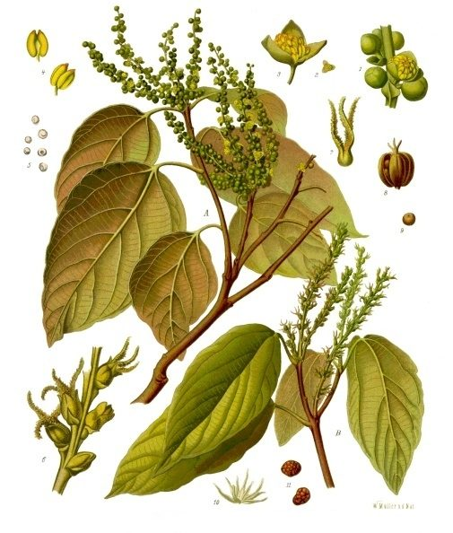

रोहिनीKamala Tree
Mallotus philippensis · Euphorbiaceae · FLR-0297

- Scientific name वैज्ञानिक नाम
- Mallotus philippensis (Lam.) Müll.Arg.
- Family कुल
- Euphorbiaceae
- Hindi हिंदी
- रोहिनी
- Local names स्थानीय नाम
- rohini, kamala, kamela, kamala tree
- Status here यहाँ की स्थिति
- native
- Movement आवागमन
- Resident, here all year
- Known from कहाँ दर्ज
- Others have published records from the Basti–Ayodhya districts बस्ती–अयोध्या के ज़िलों से दूसरों के प्रकाशित अभिलेख
- IUCN IUCN
- not evaluated
- Review समीक्षा
- audited and independently read
When to look कब देखें
Present all year. साल भर मौजूद।
Uses and possibilities उपयोग और संभावनाएँ
“Traditional medicine” means a documented traditional use, not a claim that it works. Nothing on this page is medical advice.
Drawn from the documented uses in the profile below, where each is labelled traditional, current or a research lead. All uses →
Tell it apart from इनसे अलग पहचानें
रोहिनी / Kamala Tree
Mallotus philippensis (Lam.) Müll.Arg. — Euphorbiaceae
रोहिनी — एक मध्यम आकार का पर्णपाती वृक्ष जो जंगलों के किनारों और मिश्रित जंगलों में पाया जाता है। पत्तियाँ बड़ी, अंडाकार, कुछ पत्तियों में छोटे-छोटे पत्ते होते हैं (कुछ अलग किस्में)। फूल हरे-पीले, लटकते हुए गुच्छों में आते हैं, और गर्मी के मौसम में पुष्पित होते हैं। इसका सबसे विशेष गुण यह है कि पके हुए फलों पर गहरा लाल रंग होता है, जो कमला नामक एक महत्वपूर्ण प्राकृतिक डाई के रूप में पारंपरिक रूप से उपयोग किया जाता है।
Quick Identification त्वरित पहचान
| Feature | Description |
|---|---|
| Size | Medium deciduous tree, 8–15 m tall, straight trunk |
| Leaves | Large, ovate, 10–20 cm, often with smaller leaflets at base (tripinnate) |
| Flowers | Small, greenish-yellow, in drooping panicles, March–June |
| Fruit | Distinctive, covered with reddish glandular hairs (from afar appears reddish) |
| Fruit colour | Bright red when mature, turning russet-brown when dry |
| Seeds | Large, black, glossy |
| The test | Red glandular fruit covered with glands is distinctive; rub fruit to see red powder stain |
Field tip: In deciduous and mixed forests, look for a medium tree with large leaves and drooping panicles of small yellowish flowers in spring. The distinctive feature is the mature fruit covered with brilliant red glandular hairs that stain the fingers deep red when rubbed.
हिंदी — कैसे पहचानें: बड़ी, अंडाकार पत्तियाँ। लटकते हुए पीले-हरे फूल। पके फल पर गहरी लाल डाई जो हाथ को रंग दे दे।
Morphology आकारिकी
Biometrics (deciduous forest trees, eastern India):
| Measurement | Range |
|---|---|
| Height | 8–15 m |
| Trunk diameter | 30–60 cm |
| Leaf length | 10–20 cm |
| Fruit diameter | 0.8–1.2 cm |
| Seed length | 0.8–1 cm |
Trunk and bark: Straight, with smooth pale greyish-brown bark that becomes slightly rough with age. Wood pale yellow, moderately soft.
Leaves: Alternate, large, ovate to elliptic-oblong, 10–20 cm long. Some leaves bear small leaflets at the base (somewhat tripinnate, especially in young growth). Margin entire or slightly serrate. Bright green above, paler beneath; pubescent on veins.
Flowers: Small, about 5 mm, greenish-yellow, functionally unisexual (dioecious). Male and female flowers on separate plants. In terminal and axillary drooping panicles. Flowers March to June.
Fruit: A distinctive, reddish capsule about 8–10 mm diameter, covered densely with red glandular hairs. These hairs contain kamala, a red resinous powder used as dye. Seed black, glossy, large relative to fruit size.
हिंदी: पत्तियाँ बड़ी, अंडाकार, कभी छोटे पत्ते के साथ। फूल पीले-हरे, लटकते पुंज में। फल लाल ग्रंथियों से ढका।
Behaviour & Ecology व्यवहार और पारिस्थितिकी
Kamala is a tree of deciduous and moist deciduous forests, often on stream banks and forest margins. It is deciduous, with leaf fall in March–April. The red glandular hairs that cover the fruit contain kamala, a valuable dye precursor. Birds may disperse seeds, but the heavy fruit primarily drops near the parent tree. The tree tolerates moderate shade and grows readily in regenerating forest areas.
हिंदी: जंगलों के किनारे और नदी के साथ पाया जाता है। मार्च में पत्तियाँ झड़ती हैं। लाल रंग की डाई के लिए प्रसिद्ध है।
Life Cycle / Phenology जीवन चक्र
| Month / season | Event |
|---|---|
| February–March | Leaf fall; dormancy period |
| March–June | Flowering begins; new leaf flush |
| June–July | Fruit sets during monsoon rains |
| August–October | Fruit matures; glandular hairs turn red |
| November–January | Mature fruits fall; seeds remain viable |
| 6–8 years from seed | First flowering |
Seeds germinate readily in moist monsoon soil. Growth is moderate. The tree fruits reliably year after year once established. Lifespan reaches 40–60 years.
हिंदी: मार्च में पत्तियाँ गिरती हैं। अप्रैल से फूल। अगस्त तक फल तैयार। अक्टूबर तक फल गिर जाते हैं।
Associated Species / Interactions संबंधित प्रजातियाँ
- Forest companion: Often grows with Sal, Jamun and other deciduous forest trees.
- Seed dispersal: Some birds feed on fruits; most seeds drop beneath parent tree.
Pests and Diseases कीट और रोग
- Leaf-eating insects and beetles during monsoon; rarely severe.
- Wood-borers may attack dead or damaged wood.
- No significant fungal diseases under normal conditions.
Agricultural / Human Relevance कृषि प्रासंगिकता
Traditional and ethnobotanical use:
- Kamala dye. The red glandular hairs covering the fruit are scraped and dried to produce kamala, a natural red dye used to colour textiles, particularly silk, for centuries. The powder can be applied directly or prepared as an aqueous extract.
- Traditional medicine. In Ayurvedic and folk medicine, kamala is used as a vermifuge (against intestinal worms) and for skin conditions. Doses described in classical texts.
- Tanning and leather work. The tannins in leaves are used in traditional leather-working.
Today. Kamala dye is being revived by textile artisans interested in natural dyes. Commercial availability is limited; most is sourced locally from wild trees.
Research direction (a lead, not a result). The chemistry of kamala dye and its fastness properties compared to synthetic reds would merit investigation. The potential for cultivating Kamala as a crop plant for dye production deserves research.
हिंदी: फलों पर की लाल डाई कपड़े रंगने में काम आती है। पारंपरिक दवा के रूप में कीड़े निकालने में। पत्तियाँ चमड़े के काम में।
Expected Locally स्थानीय रूप से अपेक्षित
Not a field record. Written from published accounts for eastern Uttar Pradesh. No confirmed local sighting yet — if you have seen it, that is what the atlas needs.
अभी तक स्थानीय पुष्टि नहीं। यह विवरण प्रकाशित स्रोतों से है, किसी अवलोकन से नहीं।
GBIF holds published records from the broader Gangetic plain. Kamala Tree is expected in deciduous and mixed forests, particularly on stream banks and forest margins throughout eastern Uttar Pradesh. Look for the medium tree with large leaves and distinctive red-hairy fruits in late summer and autumn.
Distribution वितरण
Global range: Native to tropical Asia from India through Myanmar, Thailand, and Malesia to Indonesia and the Philippines.
In India: Distributed in deciduous and moist deciduous forests from the sub-Himalayan region through peninsular India up to about 1,200 m.
In Uttar Pradesh: Scattered in eastern deciduous forests and tarai-bhabar zone; not abundant.
In Basti district / eastern UP: Expected in natural forest remnants; exact distribution not yet documented.
Research Questions शोध प्रश्न
- How much kamala dye can be harvested from a single mature tree per year? — Collect and dry the fruit hairs from multiple fruits; weigh dry product.
- Which insects lay eggs in Kamala fruits, and what is their impact on fruit viability? — Cut open fruits; examine for larvae and parasites.
- How is kamala dye prepared traditionally, and what dyeing techniques are used? / कमला की डाई को परंपरागत रूप से कैसे तैयार किया जाता है? — Interview dyers; document methods and yield.
- What is the germination rate of Kamala seeds under different moisture conditions? — Sow seeds in controlled conditions; track germination timing.
- Which bird and mammal species consume Kamala fruits, if any? — Monitor fruiting trees; observe and record visitor species.
Similar Species मिलती-जुलती प्रजातियाँ
| Species | How to tell apart | हिंदी |
|---|---|---|
| Mahua (Madhuca longifolia) | Leaves smaller, glossy; flowers sweet-scented, clustered | छोटी चमकदार पत्तियाँ; मीठी महक |
| Jamun (Syzygium cumini) | Leaves opposite; small purple berries; evergreen | विपरीत पत्तियाँ; बैंगनी जामुन |
| Neem (Azadirachta indica) | Pinnate leaves; small bitter fruits; evergreen | पंखदार पत्तियाँ; कड़वे फल |
Field rule: A medium deciduous tree with large simple leaves and distinctive bright red hairy fruits is Kamala Tree.
Taxonomy & Classification वर्गीकरण
Original description. Originally described as Rottlera philippensis by Lamarck in 1791 based on specimens from the Philippines. Later transferred to Mallotus by Müller-Argovia in 1866. Type locality is the Philippines.
Subspecies. Monotypic — no subspecies are currently recognised.
Family and order placement. Family Euphorbiaceae (the spurge family). The genus Mallotus contains about 150 species of tropical Asian and Australasian trees, many with distinctive red or orange fruits.
Phylogenetic notes. Mallotus philippensis is the type species of Mallotus. The genus is related to genera such as Ricinus and Manihot.
IUCN status rationale. Not evaluated. Scattered in suitable forest habitats; populations are declining with forest loss.
Photo Gallery फोटो गैलरी
No photos yet — add field photos to media/species/kamala_tree/ and run node scripts/sync_photos.js.
Wanted photos:
- Whole tree in forest setting
- Large leaves with possible leaflets at base
- Drooping panicles of greenish-yellow flowers
- Red-hairy mature fruits on branches
- Closeup of glandular hair-covered fruit
- Person harvesting kamala dye
- Kamala dye powder/paste
References संदर्भ
- Lamarck, J.B. (1791). Tableau Encyclopédique et Méthodique des Trois Règnes de la Nature, p. 495.
- Hooker, J.D. (1887). The Flora of British India. Vol. 5. L. Reeve & Co., London.
- Duthie, J.F. (1903). Flora of the Upper Gangetic Plain and of the Adjacent Siwalik and Sub-Himalayan Tracts. Vol. 3. Government Printing, Calcutta.
- Kirtikar, K.R. & Basu, B.D. (1935). Indian Medicinal Plants. 2nd ed. Vol. 1. Lalit Mohan Basu, Allahabad.
- Chopra, R.N., Nayar, S.L. & Chopra, I.C. (1956). Glossary of Indian Medicinal Plants. CSIR, New Delhi.
- GBIF Occurrence Data — Mallotus philippensis, India.
Source file: species/flora/trees/kamala_tree.md